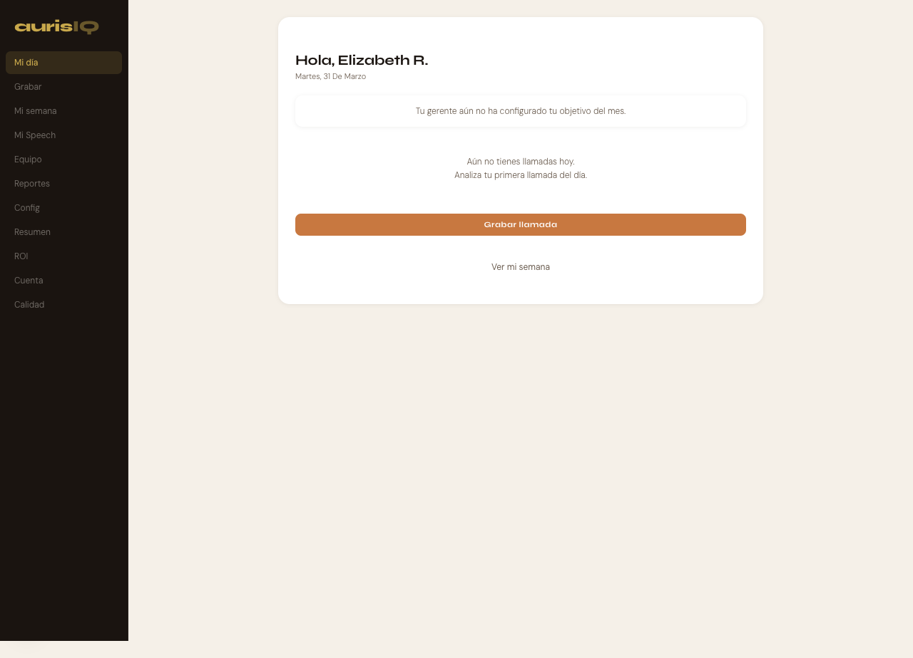
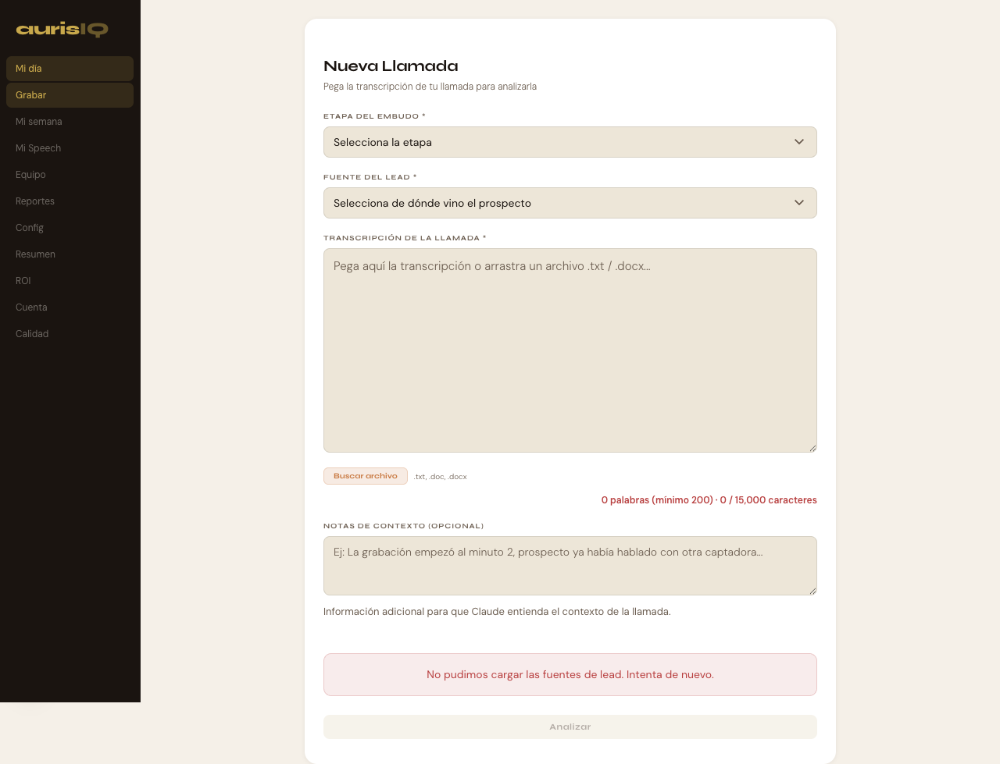
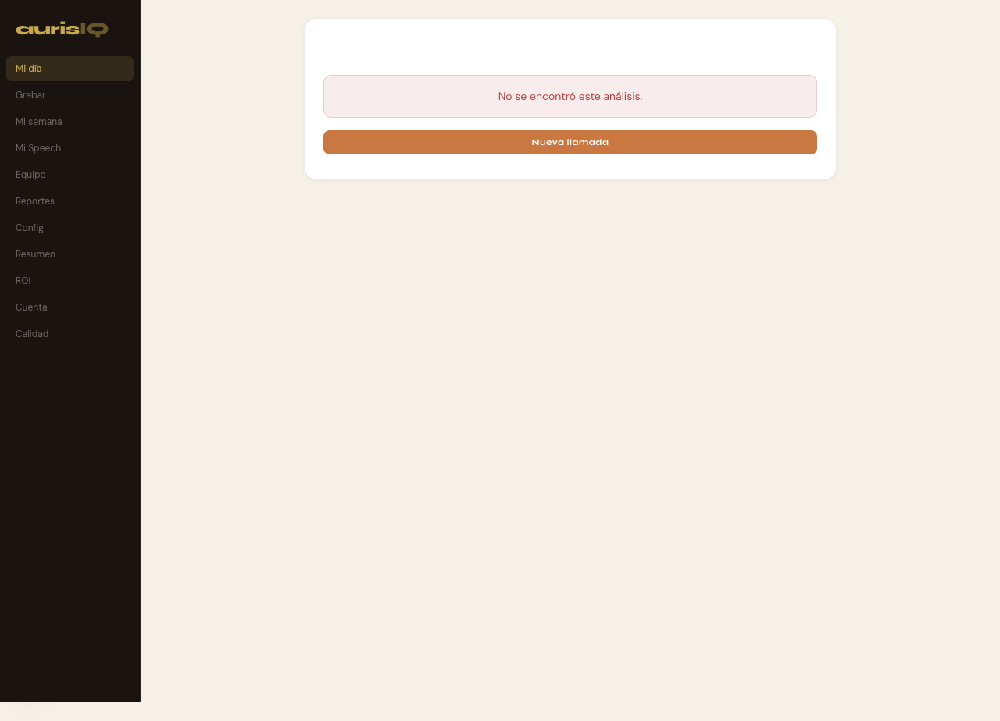
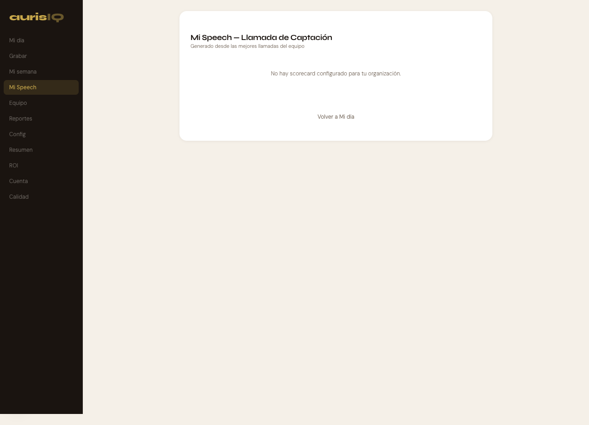
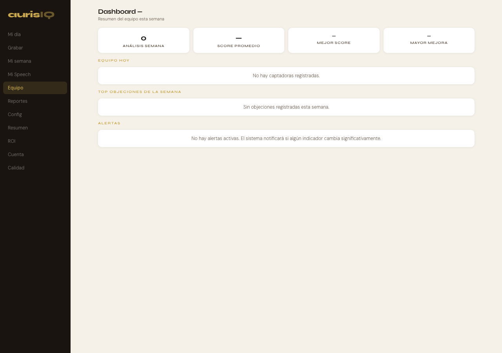
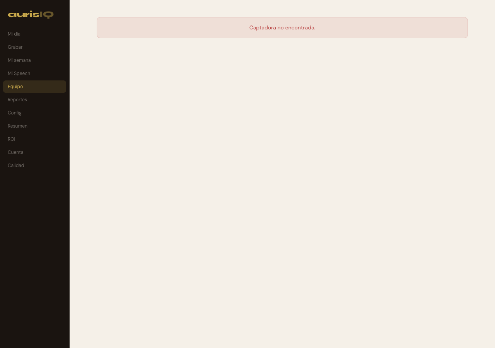
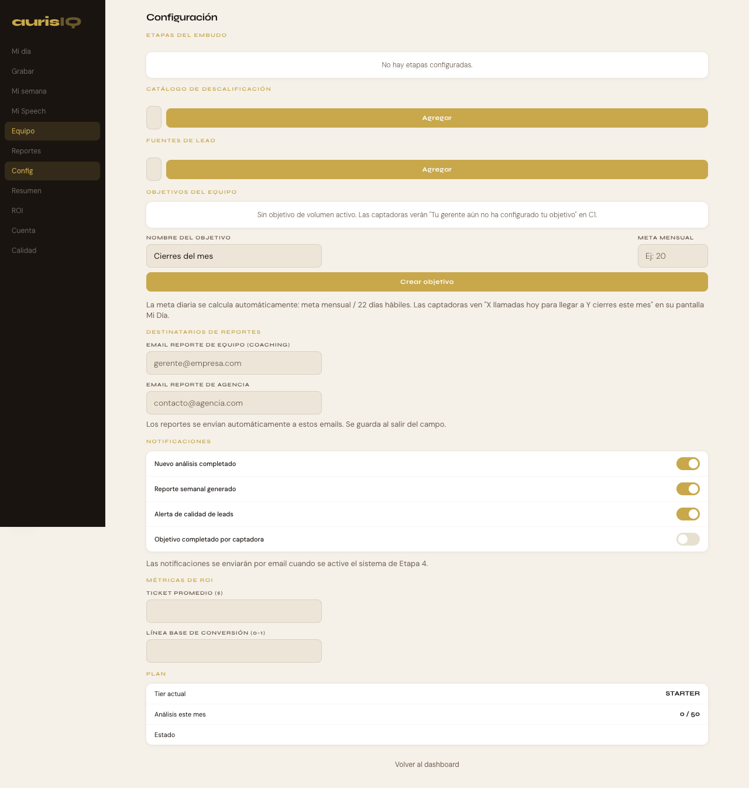
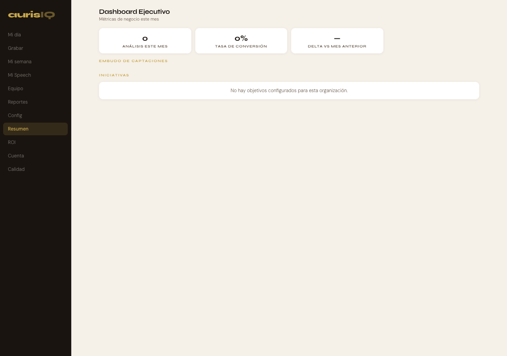
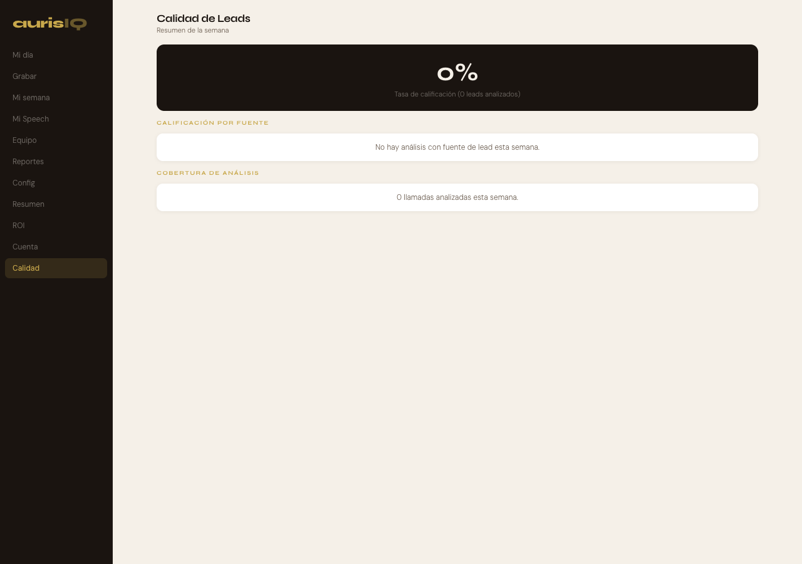

Componentes: saludo con nombre, cuota diaria (objetivo/22), tip del dia (patron_error), lista de llamadas con label legible, score promedio (solo si 2+), boton terracota "Grabar llamada".

Componentes: selector etapa embudo, selector fuente_lead (requerido), textarea con drop zone (.txt/.docx), boton "Buscar archivo", validador 200 palabras minimo, notas de contexto opcionales, boton "Analizar" deshabilitado sin fuente/texto.

Componentes: badge "Lead calificado/requiere seguimiento", frase que funciono, UNA mejora concreta, razones con label, fases ordenadas peor-a-mejor con colores, secciones expandibles (momento critico, objecion), score al FINAL. Estado vacio mostrado aqui (mock user).
Componentes: total llamadas, score promedio con delta, mejor llamada (dark card ink), objecion mas frecuente con frase, grafica score por dia (solo si 3+). Sin comparativas con equipo.

Componentes: titulo "Mi Speech — Llamada de Captacion", fases con numero dorado (CSS counter), max 3 frases por fase con border-left terracota, version y fecha de publicacion. Lee exclusivamente de speech_versions (published=true).

Componentes: 4 KPIs (analisis semana, score promedio, mejor score, mayor mejora), banner alertas activas, semaforo captadoras (rojo/amarillo/verde), top 3 objeciones con frecuencia, seccion alertas.

Componentes: avatar + nombre, tabs (hoy/progreso/objetivos/coaching), evolucion de score, comparativa antes/despues (solo si 5+ analisis en cada periodo), area de oportunidad (fase con mayor brecha vs equipo), historial con labels legibles.

Componentes: 8 secciones — etapas embudo, catalogo descalificacion (code auto-generado, toggle), fuentes lead (separado de descal), objetivos equipo (volume mensual), destinatarios (emails equipo/agencia), notificaciones (4 toggles), metricas ROI (ticket promedio, baseline), plan (tier, uso, estado).

Componentes: KPIs (analisis mes, tasa conversion, delta vs mes anterior), embudo de captaciones con barras, comparativa mensual (3 meses), seccion iniciativas desde objectives. Sin scores individuales, sin nombres de captadoras.

Componentes: banner alertas activas, tasa calificacion (numero grande dark card), razones descalificacion (primaria vs secundaria), calificacion por fuente con delta vs semana anterior, cobertura analisis. Sin nombres de captadoras, sin scores individuales.